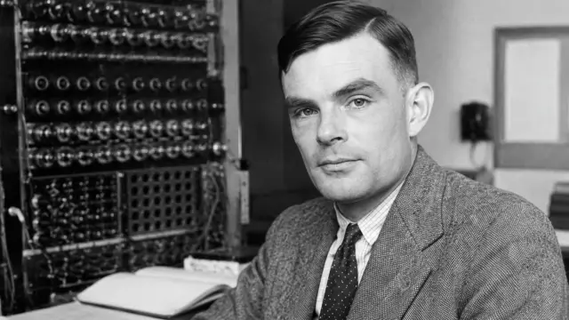

La Inteligencia Artificial (IA) se consolidó como campo científico en el verano de 1956 durante la célebre Conferencia de Dartmouth. No obstante, sus raíces filosóficas se remontan a los siglos XVII y XVIII con pensadores como René Descartes (quien planteó la diferencia entre autómatas mecánicos y la mente humana) y Gottfried Wilhelm Leibniz (quien soñó con un cálculo universal para resolver disputas lógicas mediante el razonamiento formal).
La IA contemporánea no es solo una herramienta tecnológica, sino un espejo que redefine conceptos filosóficos fundamentales como la conciencia, la agencia moral, la creatividad y la definición misma de la inteligencia. En la vida diaria, transforma el trabajo, la educación y las relaciones interpersonales, planteando profundos dilemas éticos sobre la autonomía de las máquinas, el sesgo algorítmico, la privacidad y el valor del trabajo humano.
La objeción sostiene que la máquina analítica no tiene la pretensión de originar nada. Su única función es realizar todo aquello que sepamos ordenarle ejecutar (can do whatever we know how to order it to perform). Carece de la capacidad de anticipar verdades analíticas, tener iniciativa propia o crear conocimiento genuinamente original; se limita estrictamente a seguir los algoritmos e instrucciones programadas por seres humanos.
Turing argumentó que las máquinas pueden sorprendernos. Aunque sigan instrucciones deterministas creadas por humanos, la complejidad de sus procesos y combinaciones puede generar resultados, descubrimientos o comportamientos que sus propios creadores no previeron ni calcularon de antemano. Para Turing, esto demuestra que las máquinas pueden exhibir una forma de originalidad práctica y aprendizaje que desafía la rigidez de la objeción de Lovelace.

Filósofos y científicos contemporáneos argumentan que las IAs actuales siguen sin poseer comprensión semántica real, intencionalidad ni consciencia fenoménica. Sostienen que los sistemas actuales realizan predicciones estadísticas avanzadas basadas en patrones de datos masivos (estocástica), por lo que simulan creatividad pero no la experimentan.
Defienden que si un sistema produce resultados (textos, código, arte, diagnósticos médicos) indistinguibles de la creatividad y el razonamiento humano, la distinción filosófica entre "emular" y "crear" se vuelve irrelevante en la práctica social y tecnológica.
| # | Nombres | Apellidos | Cosas Destacables | Fecha de Nac. | Fecha de Mue. | Lugar de Nac. |
|---|---|---|---|---|---|---|
| 1 | Augusta Ada | Byron | Primera Programadora | 10 / Diciembre / 1815 | 27 / Noviembre / 1852 | Londres |
| 2 | Alan | Mathison Turing | Inventor de la primer maquina programable | 23 / Junio / 1912 | 7 / Junio / 1954 | Londres, Inglaterra |
| 3 | René | Descartes | Ingeniero de Sistemas | 31 / Marzo / 1596 | 11 / Febrero / 1650 | La Haye en Touraine. Francia |
Pagina creada por: Omar Ortiz Hernandez y Jose Angel Trigueros Zalas ambos de el 5AMP